Please email cs61b (at) berkeley.edu for logistics.
Instructor
   |
Josh Hug
One time this happened.
|
Teaching Assistants
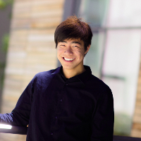 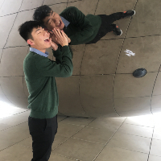 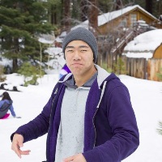 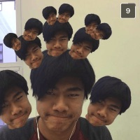 Albert Hu
al.hu (at) berkeley.edu
Hello! I'm a third year CS major and 61B was my favorite class (actually I decided that I wanted to pursue CS after taking it). I enjoy cooking, playing Hearthstone and League of Legends, and of course, browsing memes. Feel free to hit me up and talk about anything!
| 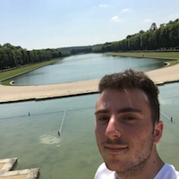 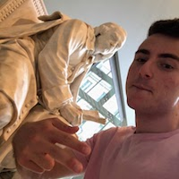 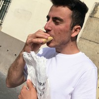
akazorian (at) berkeley.edu
Hey everyone! I'm Alex and I'm a junior majoring in CS. Cool fact: one of my proudest accomplishments is a 10+ page paper on Kanye West’s “The College Dropout”. If you ever find me, I’m probably procrastinating by looking for new music or watching/playing basketball. Feel free to talk to me about anything like Kendrick Lamar, Radiohead (being the best band of all time), the Lakers, or how amazing HashMaps are.
| 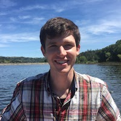 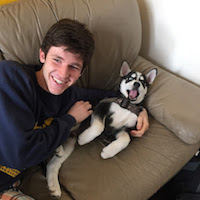 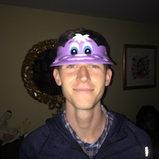 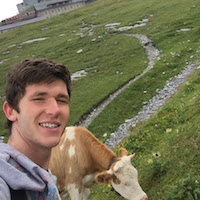 Alex Krentsel
akrentsel (at) berkeley.edu
Hello! I'm a third year EECS and Music major. I grew up in upstate New York and finished high school in Kentucky. In past semesters, I TA'd EE16A, but am now jumping ship to the CS side. On Sundays, you can hear me playing (trying to play) the Campanile bells. In my free time, I like to play tennis and throw around frisbees. My favorite restaurant was Eatsa, until it closed. Looking forward to meeting all of you!
|
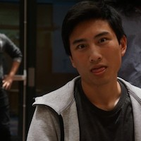 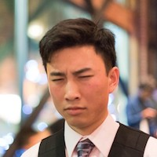 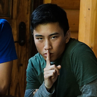  Alexander Hwang
a.hwang (at) berkeley.edu
Hey! Call me Alex. I enjoy introspecting, consuming/creating good stories, solving puzzles, and jamming on Spotify. Since childhood, one of my biggest dreams has been to have the ability to fly, but I might have to settle for telekinesis or teleportation since that's very unlikely.
| 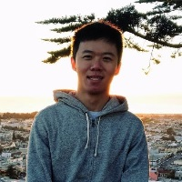 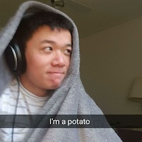
allenguo (at) berkeley.edu
Hi everyone! I'm a masters student in CS from Maryland. I'm interested in data science and functional programming. I also enjoy listening to music, making coffee, and obsessively checking my Google Calendar. Can't wait to meet you all!
| 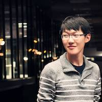 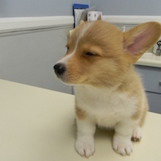 Andy Zhang
y.zhang (at) berkeley.edu
Hello! I'm a 4th-year EECS major from Palo Alto. I've TA'ed for CS 61B and also EE 16A in the past. In my free time, I enjoy hiking new trails, reading/watching Game of Thrones, and eating seafood.
|
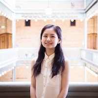 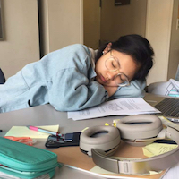
annietang (at) berkeley.edu
Hello pals!! I'm a second-year CS major from the Bay Area (woop) who loves listening to music + podcasts, and is also slightly concerned with how color-coded my Google Drive/Calendar is hah. 61B with Josh Hug is my favorite CS class to date, so I'm hopin' to help make your experience as good as mine was :')
| 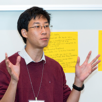  Antares Chen
antaresc (at) berkeley.edu
Do you ever look at yourself in the mirror and wonder, "what wattage is my microwave?"
| 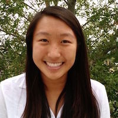 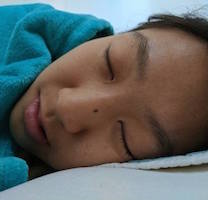 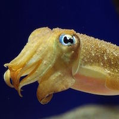 Ashley Chen
ashley.chen (at) berkeley.edu
Hi! I'm a 4th year from San Diego majoring in EECS. In my spare time I enjoy playing volleyball, dancing, dogspotting, and eating fruit. I also love plants and oddly satisfying videos. My favorite animal is the cuttlefish!
|
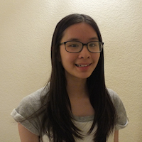 Ashley Chien
ashleychien (at) berkeley.edu
Hi! I'm Ashley :) I'm a second-year CS major from Cupertino, CA. Some (kind of) fun things about me: I am a big fan of reading, both books and stuff online (Quora and Reddit are my favorites). I am also a huge fan of cats. My favorite kind of food is noodle soup, especially pho, ramen, and beef noodle soup. I love talking to people and hearing about people's lives. Looking forward to a great semester and getting to know you all ^_^ !
| 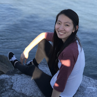 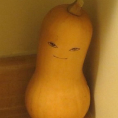 Betty Chang
bwchang (at) berkeley.edu
Hey everyone! I'm a senior studying CS and CogSci, and this is my third semester teaching 61B (my favorite class)!! I like to procrastinate by eating and watching people eat all you can eat hotpot on youtube to fill the void inside me because I know I will never be able to eat as much as they can
| 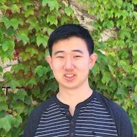 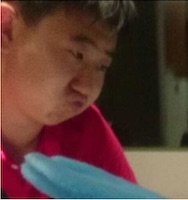 Brandon Lee
brandonxxlee (at) berkeley.edu
Hey! I'm Brandon, a third year EECS major from Irvine, CA. I quite enjoy the outdoors, but more accurately I spend most of my time playing video games or just hanging out with friends. I'm excited to meet everyone this coming semester, so please come say hello!
|
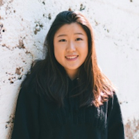 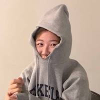 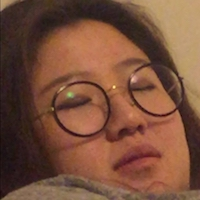 Catherine Han
catherinehan (at) berkeley.edu
Hello there! I'm Catherine, and I'm from Orange County and am currently a second year studying computer science. In my free time, I enjoy baking, browsing r/rarepuppers, and drinking concerning quantities of milk tea. 61B is my favorite CS course I've taken so far, and I hope it'll be yours too! Looking forward to a great semester. (ﾉ◕ヮ◕)ﾉ*:･ﾟ✧
| 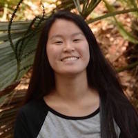 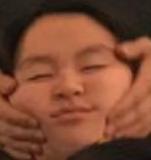 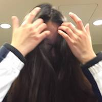 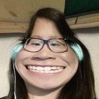 Christine Zhou
cazhou (at) berkeley.edu
Hello! My name is Christine and I'm a Computer Science major from the East Bay. In my free time, I enjoy playing piano and distracting myself with video games. I decided to become a CS major after taking 61B, so I hope you enjoy it as much as I did! I look forward to meeting you all!
| 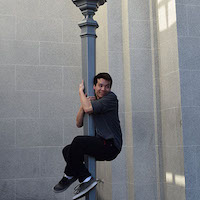 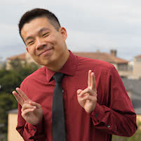
dannychu (at) berkeley.edu
Hi all! I'm really not an interesting person, but if you want to hmu to talk about why the world is flat or a new startup you want to pursue, go for it! I love adventures.
|
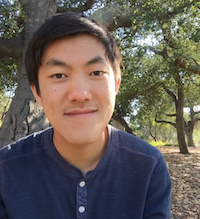
dorian8x8 (at) berkeley.edu
Heyo, I'm Dorian and I'm a third year EECS major from San Jose! I do graphics stuff, so if you want to chat about pretty (fake) pictures, come talk to me! Unfortunately I tend to enjoy things I suck at, like fishing and basketball, so any tips are greatly appreciated.
| 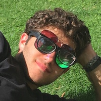 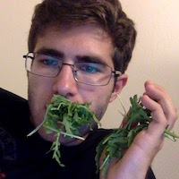 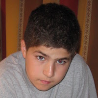
eli.lipsitz (at) berkeley.edu
Hey! I'm a third year computer science major from Chicago-ish. As far as computer science goes, I've found that I'm at least a little bit interested in pretty much everything. My hobbies include browsing Wikipedia, cooking, eating, beating Wayne at chess, and starting side projects (but rarely finishing them).
| 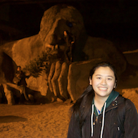 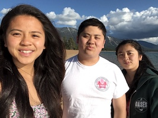 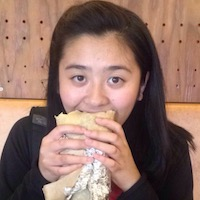 Gi-Gi Lu
gigi.lu (at) berkeley.edu
Hi everyone! I’m Gigi and I’m a third year Computer Science major from San Francisco. I enjoy eating dumplings, baking cookies, walking (but not running), and teaching. Something I truly believe in is, "If it's important enough to you, you will find a way. If it's not, you will find an excuse." Email me if you have any questions at all!
|
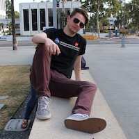 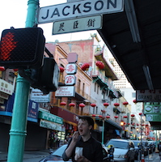
jleisure (at) berkeley.edu
Hey all! I am a 3rd year CS major. I spend my time not understanding CS, making more food than my housemate and I can finish (help), and wishing I had more time to play board games/card games/Tabletop RPGS. I also play a niche sport from Germany where I get to hit people, so that's fun too (<- ask me about this if you want a chance to hit me). Feel free to talk to me about CS or anything else that interests you!
| 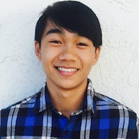 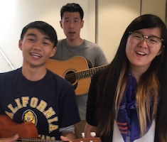
jcdy (at) berkeley.edu
Kumusta! My name's JC, which stands for Joshua Caleb (not Jesus Christ). When I have downtime I like jamming with my ukulele/piano, unreservedly trying all kinds of new foods, hoarding free swag, and spontaneously hanging out with friends. I'm always down to chat about CS, learn something in your native language, or share my favorite places to eat good food!
| 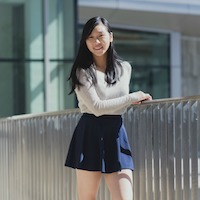 Jenny Huang
jph17 (at) berkeley.edu
Hi friends! My name is Jenny and I'm a second year CS major from Canada, NJ, and MA. In my free time, I like eating, cooking, baking, drinking boba, dogspotting (CORGIS), dancing, and hiking. Feel free to introduce yourself and come talk to me!
|
Jeremy Dong
jeremyd (at) berkeley.edu
Hi there! CS61B has hands down been my favorite class and my goal is to help all of you love it as much as I did. Come to my discussion to find out which one is me! :D
| Jiana Huang
jhuang99 (at) berkeley.edu
Heyo! I'm a senior Computer Science and Cognitive Science double major. You might find me taking snaps of squirrels all over campus or climbing at the bouldering gym! Come say hi and I'm always down to have more climbing friends!!
|
jim.x.ren (at) berkeley.edu
Greetings! My name is Jim. I'm a graduate student in EECS, and this is my 5th time teaching. I spend my evenings getting chicken dinner and browse zesty memes. Normies get out reeeee...
|
jzeitsoff (at) berkeley.edu
Hi! My name’s Josh, and I’m a third year CS major from the Bay Area. I enjoy baking, head bumping to rap music (J.Cole/Chance/Big Sean/Drake), and eating burritos. I’m also Vice President of the Cal Fencing Club. I really love teaching CS, and I hope to meet as many of you as possible this semester. I’m always down to talk, so feel free to reach out to me!
|
justin.mi (at) berkeley.edu
Hello! I’m a second year EECS major, born and raised in the Bay Area! Some of my favorite things include skating, hip-hop, and watching old Vine compilations on YouTube. You will often see me wearing like 2345 layers of clothing because I am always cold. Especially in the Soda labs...
| Karuna Wadhera
kuna (at) berkeley.edu
Hello! I'm a third year CS major who started studying CS because of Neopets! I love coffee ice-cream (but don't drink coffee) and watching cooking shows (but I can't actually cook). You can always find me raving about the TV show The West Wing or trying to get my friends to play games with me. When I was in kindergarten, I used to teach an imaginary class on my small whiteboard; six-year-old me and twenty-year-old me are overjoyed to have a real class to teach now. 🙂
|
Kelly Lin
kellymlin (at) berkeley.edu
Hi! I'm a second year EECS major from Irvine, CA. I enjoy reading, playing piano, writing music, and sleeping in my free time. 61B was the class that helped me decide my major, and I hope you all enjoy it as much as I did!
| Kevin Arifin
kevarifin14 (at) berkeley.edu
Hi I’m Kevin and I’m a 4th year EECS major. When not solving riddles, I like going to the gym, cooking, and watching Star Wars Clone Wars. If you have an interesting riddle, or can introduce me to Elon Musk don’t hesitate to stop by!
| Kevin Chang
kchang96 (at) berkeley.edu
}<(((•>
|
kevinlin1 (at) berkeley.edu
I like teaching!
| Kevin Lowe
klowe (at) berkeley.edu
Hi! I'm a 4th year senior from SoCal majoring in Computer Science. 61B was my favorite class at Berkeley so I am looking forward to teaching the class for my third time! Outside of class I like to play Magic: the Gathering, which is a really fun trading card game. I will also be the facilitator of the Magic: the Gathering DeCal this semester, so if you're interested come check it out!
|
omatthew98 (at) berkeley.edu
Hello there. I'm Matt and I am a second year mechE → EECS major. I was born and raised in Maryland so shout out to all the East Coasters. Anyways I like all kinds of weird stuff but some of my favorites are photography, math, any and all food, skateboarding, and of course memes. 61B is amazing so I can’t wait to work with and meet all of you!
|
msit (at) berkeley.edu
HI! I'm a 3rd year in BioE & EECS! I really, really enjoy pastel colors (mmm mint, lavender, coral) and Oolong (it's a luscious boba flavor spelled with quite a handsome permutation of English letters!). Come find me and we can develop these theories some more! (or we can talk about data structures too I guess hehe.)
| Michael Ju
mju (at) berkeley.edu
Hello! I'm a senior CS major and Stats minor from the distant town of Fremont, California. In my free time, I enjoy running, climbing, and playing soccer. I also love playing Melee, though I'm not very good. I've liked the majority of the CS classes that I've taken here, but 61B is definitely at the top of the list. I hope you enjoy it too!
|
mhwangc (at) berkeley.edu
Hi! I'm a second-year EECS major who really likes tea and chili cheese fries. Outside of my studies, I enjoy photosynthesizing under the sun, hiking, making midnight food runs, playing board games, bothering my housemates, and listening to music and podcasts. I'm also trying to get back into reading, so recommend me some books! I look forward to meeting you all, and I hope we have a great semester together in CS 61B!
|
Nicole Rasquinha
nrasquinha (at) berkeley.edu
Hello everyone! I'm a fourth year EECS major from sunny San Diego. I've TA'd both CS 61A and CS 70 so far, and I'm very excited to teach CS 61B now! Besides teaching CS, I enjoy doing science outreach with elementary school kids as well as singing, hiking, and daydreaming about travel. Looking forward to meeting you!
| Sam Zhou
jhgzhou (at) berkeley.edu
Hello! I'm Sam, a 3rd year CS major who is excited to be teaching again! I find it hard to say where I'm from since I've moved from China -> South Carolina -> NYC -> NYC -> NJ -> Upstate NY -> Upstate NY -> Upstate NY -> and now here in Berkeley :) Things I enjoy include: trying new foods, taking nice hikes, any games - board or video, and cooking slightly above mediocre dishes for friends and family. Please feel free to introduce yourself and ask me anything!
| Sandy Zhang
sandy (at) berkeley.edu
Hello! I am a third year CS major from the Bay Area (specifically Fremont and not Bikini Bottom unfortunately). My boba of choice is usually something matcha and I think linked lists are cool! Looking forward to a great semester!
|
ssterman (at) berkeley.edu
Hi everyone! I am a PhD student in Human Computer Interaction, who studied Product Design as an undergrad. I like hiking, baking bread, and avoiding my computer on nice days.
| Shubham Gupta
shubham321 (at) berkeley.edu
Hey Everyone! I'm a second year CS student here at UC Berkeley brought up right here in the Bay Area! I enjoy playing board games, watching superhero movies, Game of Thrones, tagging my friends in memes, and BOBAAAA. CS61B is my favorite class at Cal and I hope you all enjoy it too!
|
tingding96 (at) berkeley.edu
Hi! I'm Ting, a third year CS major and Chinese minor from St. Louis. When I have free time I like to listen to music, cook, eat, chase cats, read, and host jam sessions with my fellow TA's. Come join us sometime! We'll sing your favorite songs :)
|
v.fang (at) berkeley.edu
Hi! I'm a third year EECS major primarily interested in systems and networks.I enjoy potatoes, Pusheen (all cute things tbh), board games, and baking. My hobbies include advocating for carb consumption, drinking coffee, and watching Netflix. I won't be teaching a section, but w.h.p. you'll find me on the 4th floor of Soda. Ask me about research!
|
wli2 (at) berkeley.edu
Hi everyone! I'm a 4th year CS major/ex-Chemistry major. In my spare time I like to fawn over my favorite data structures (just kidding) (not really). In reality, I play volleyball, poker and chess, as well as binge-watching whatever is hot on Netflix. I look forward to meeting all of you! :)
|
{kind=link}
Tutors
Alan Ton
alanton (at) berkeley.edu
I'm a 2nd year EECS major from a small city called Walnut near LA. I like exploring new places and trying out new things. 61B was one of the best experiences I've had at Cal so far and I'm hoping it'll be yours as well after this semester.
| Alison Tanubrata
alisontanu (at) berkeley.edu
Hi! My name is Alison and I’m a 3rd year Computer Science major. In my spare time I like listening to kpop and dancing :) I love teaching 61b and I’m excited to meet everyone!
| Anson Tsai
yuancheng.tsai (at) berkeley.edu
Hi all! I’m a second year EECS major from Los Angeles. I like watching mind-boggling movies, exploring the outdoors, munching on munchies, and browsing the web (mostly memes) in my spare time. If you see me around, feel free say hello!
|
Chris Sreesangkom
csreesan (at) berkeley.edu
I am from Bangkok, Thailand but spent a few of my early teenage years in a town below Melbourne, Australia. I recently switched into CS from physics. I love playing and watching tennis, soccer, and basketball. And I also love snowboarding.
| Dee Guo
deeguo (at) berkeley.edu
Hello! I am a second year CS major. I like penguins :)
| Jennifer Liu
jennifer1iu (at) berkeley.edu
Hi everyone! I'm a 3rd year CS major from Cupertino, CA, and this will be my second semester being involved with CS 61B, which has been my favorite course at Cal (and the reason I'm no longer MCB). The two loves of my life are dogs and food, so outside of class you can find me dogspotting or browsing Yelp for new restaurants to try (hmu with recommendations!!). I also like to take naps and can tell you the locations of several nap-friendly couches on campus.
|
einzelganger (at) berkeley.edu
Hey everyone! I'm a third year CS major mainly interested in theory and game design. In my free time I like playing and critiquing games, listening to k-hip hop, and drinking unhealthy amounts of black coffee. You can catch me in one of the Korean restaurants on Southside or doing work in Soda.
| Kyle Su
kylesu98 (at) berkeley.edu
Hi Everyone! I'm a second year computer science major from the Bay Area. I enjoy hiking, board/video games, Rick and Morty, and following (e)sports, and disrupting paradigms, but I'm also always down to talk about pretty much anything. CS61B has definitely been my favorite class, so I hope you enjoy it as much as me! I look forward to meeting everyone :)
| Lauren Hong
lauren.hong (at) berkeley.edu
Hello! I'm Lauren, a second-year Computer Science major from Huntington Beach, California (also known as Surf City!). When I'm not studying CS, I enjoy introspecting, going for a long run, binge-watching Korean dramas, jamming out on Spotify, and eating a shameful amount of good food. Looking forward to a great semester together! :]
|
Michael Lum
michaellum (at) berkeley.edu
greetings! I am a second year CS major and music minor. In my free time, I like to fiddle around on different instruments, milly rock, hang out with my fellowship, and waste away watching Planet Earth. 61B is my favorite class to date and I'm excited to share my passion for spicy data structures with you all. Feel free to say hi to me or email me anytime.
| Nishita Shetty
nishetty (at) berkeley.edu
Hi! I'm a third year Computer Science & Integrative Human Biology major from the Bay Area. While I'm not doing CS, I like dancing, eating avocados, and contemplating the universe. CS 61B has been my favorite class at Cal so far, and I hope it's yours too!
| Riley Woo
rileywoo (at) berkeley.edu
Hey guys, Riley here! I'm a 3rd year studying computer science and minoring in Spanish. As the minor suggests, I like languages; I'm also in my 2nd semester of Korean right now. Apart from that, I play for Cal's B-team for Ultimate Frisbee (ThugMo), I'm a research assistant for a psychology lab, post memes frequently on UCBMFET, enjoy running, and solve Rubik's Cubes competitively. I really enjoyed 61B and hope you do too!
|
sebsong (at) berkeley.edu
Hi! I'm a 4th year CS major. I like riding bikes, playing basketball, and making pizza! Feel free to hit me up anytime!
|
tjasthi (at) berkeley.edu
Heyo! My name is Tapan Jasthi. I'm a junior L&S Computer Science major from Minnesota. In my freetime, I like to dance and browse trash memes. 61B is my favorite class at Berkeley and I hope you come to enjoy it as well!
|
young.guo (at) berkeley.edu
Hey there! I'm a third-year CS major from the south bay. Outside of class, I'm a huge fan of playing board games (Avalon is great) and Badminton! If you want to talk about your favorite board games or anything at all, I'd love to chat! You can also find me at the RSF for Badminton open gyms on Tuesdays and Thursdays!
|